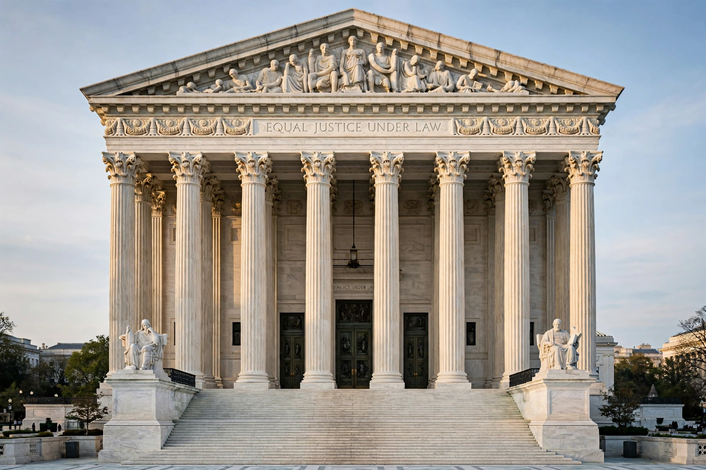

Ray v. Blair
| Ray v. Blair | |
|---|---|
 | |
| Court | Supreme Court of the United States |
| Decided | April 3, 1952 |
| Citation | 343 U.S. 214 |
| Question | Whether a state may require presidential electors to pledge to vote for their party's nominee |
| Holding | Yes — the pledge requirement is constitutional |
Ray v. Blair, 343 U.S. 214 (1952), is a decision of the Supreme Court of the United States holding that states may require candidates for the position of presidential elector to pledge to vote for their party's nominees for president and vice president, and may exclude from the primary ballot those who refuse. The case arose in Alabama during the 1952 Democratic primary and is a foundational precedent on the role of Electoral College electors as agents of the political parties rather than independent actors.
Background
Edmund Blair sought to run in Alabama's Democratic primary as a candidate for presidential elector but refused to sign the pledge, required by the state Democratic executive committee under Alabama law, promising to support the party's national nominees. The committee's chairman (Ray) refused to certify him as a candidate. Blair sued, arguing that the pledge requirement violated the Twelfth Amendment by constraining electors' freedom and interfered with a federal function. The Alabama courts ruled against Blair, and he appealed to the U.S. Supreme Court.
Decision
Justice Stanley Reed, writing for the majority, rejected the challenge. The Court reasoned that presidential electors exercise authority derived from the state, that the election of electors in party primaries is a state-run process, and that a political party may fix qualifications for its own candidates, including a pledge of support for the eventual nominees. The Court noted the long historical practice of electors voting for their party's candidates and held that requiring the pledge did not violate the Constitution — while observing that the pledge itself might not be legally enforceable against an elector who nonetheless cast a faithless vote.
Legacy
Ray v. Blair left open the question of whether states could punish or replace "faithless electors" until 2020, when the Court decided Chiafalo v. Washington, upholding state penalties and building on Ray's premise that states control the appointment of electors. The case is still cited for the proposition that electors function as pledged party representatives, not independent deliberators.